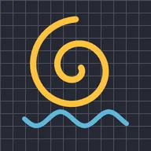

Kontur zuspitzen

Lässt Konturen spitz auslaufen: die Stift- und Pinselstriche einer Freihandzeichnung sowie die Kontur von Linien und Formen (Rahmen & Schatten > Kontur). Von null bis zum Start und vom Ende bis auf null. „Verengung“ macht die Zuspitzung schärfer.
Einstellungen
| Einstellung | Typ | Bereich | Standard |
|---|---|---|---|
| Start | Zahl | 0% bis 100% | 30% |
| Ende | Zahl | 0% bis 100% | 70% |
| Verengung | Zahl | 0 bis 100 | 0 |